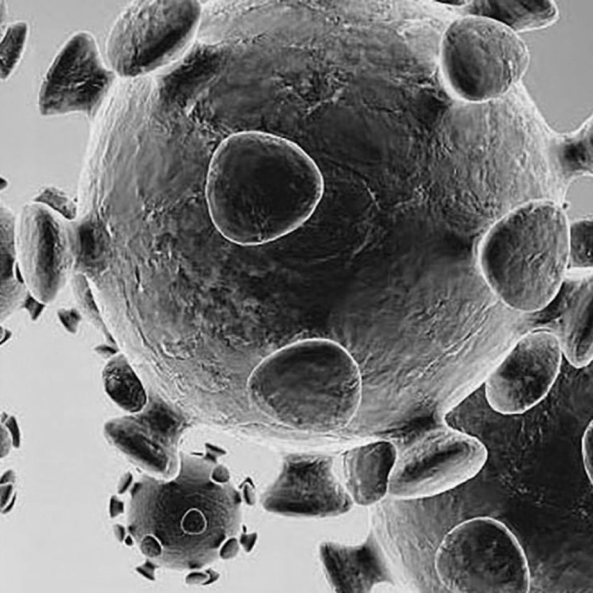
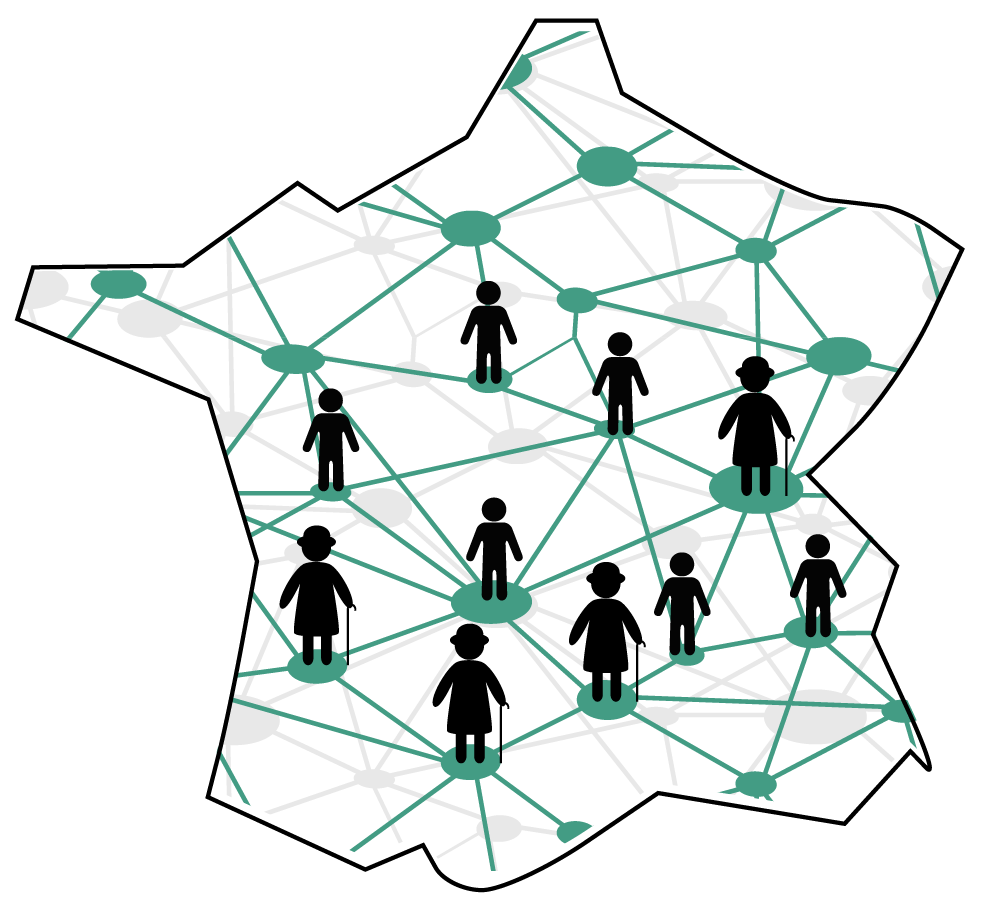
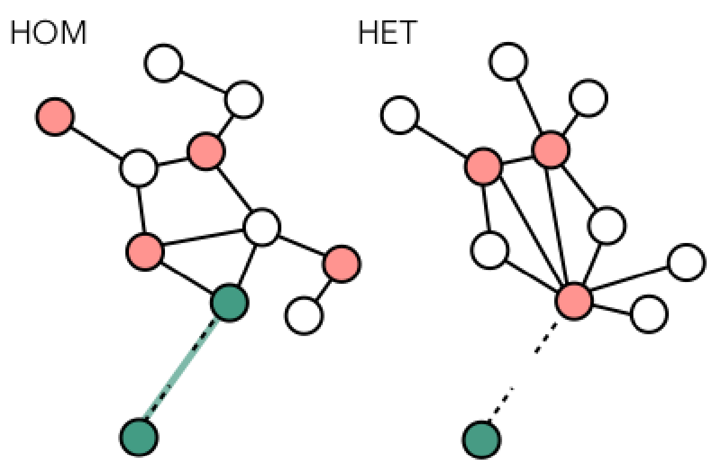
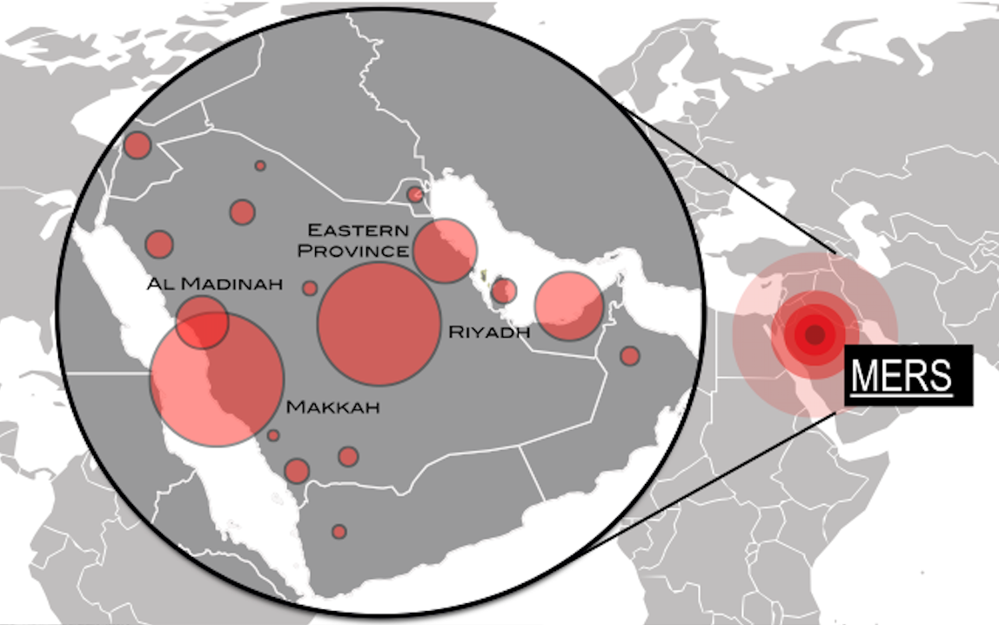
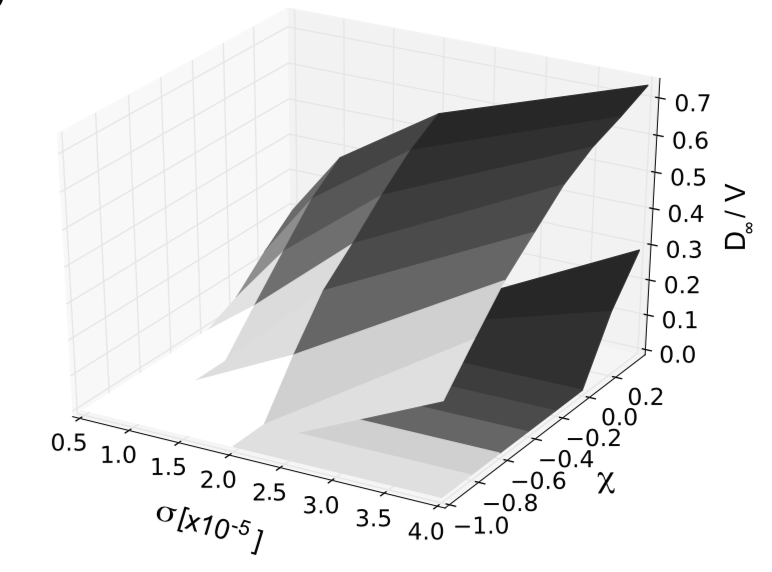

funded projects
COVID-19 |
|---|
|
 Since the early days following the virus emergence we are working on the spread of SARS-CoV-2. During the pandemic stage we have provided real-time analyses on the outbreak unfolding, focusing mainly on the risk of international propagation. In addition, we have developed an agent-based model for scenario anaysis, which has made possible to provide projections on the effectiveness of the digital contact tracing app and to estimate the potential impact of reactive vaccinaiton. These studies were communicated to public heath authorities or done in direct collaboration with them to support decision making. Current work is focusing on the interaction dynamics between SARS-CoV-2 variants and on the impact of the COVID-19 pandemic on the circulation of seasonal respiratory infections. Fundings: DMM at the University of Padova, the program Starting Package from the Cariparo Foundation Haute Autorité de Santé, ANR Flash Covid-19, the Fondation de France, the program Emergence(s) of municipality of Paris. |
uncovering the drivers of Influenza |
|---|
|
 Each winter the influenza virus hits the French population causing a substantial number of infections, hospitalization and deaths. Virus characteristics and population at risk varies from year to year, which makes difficult the planning of medical resources and vaccination. Many questions are still open regarding the spreading and the evolution of the virus: how the interplay between social contacts and susceptibility in young and elderly individuals affect virus mutation? How do different variants of the virus interact and how can we explain the resulting co-existence pattern observed in the territory? Can we model the epidemic risk for different virus variants and age-classes? How can we exploit this knowledge to improve vaccination schemes? Collected influenza-like-illness (ILI) records and viral genetic data are traditionally analyzed separately with different approaches (epidemiological statistics, and phylogenetic analyses respectively). This limits the information that can be recovered from these data. The project CompFlu will provide new quantitative approaches for the integrated analysis of ILI and genetic data based on data-science techniques and intensive computer simulations. This will yield new understanding on the spread and evolution of seasonal epidemics. Acronyme: CompFlu Title: Advanced computational approaches for the integrative study of virological, epidemiological and socio- demographic drivers of influenza Collaborators: CNR Institut Pasteur, Lemey Lab at Katholieke Universiteit Leuven, Réseau Sentinelles, Equipe 1 and 2 at iPLESP Funding program: Emergence(s) de la Ville de Paris Duration: 4 years, 2019-2022 
|
other projects
host contacts and multi-pathogen interaction |
|---|
|
 Across the fields of biology, ecology, epidemiology and public health, an increasing attention is recently devoted to the web of interactions taking place among infectious disease agents and between the pathogens and the living species hosting them. Indeed, pathogens do not spread in isolation and disease outbreaks are the result of complex ecological processes where different infectious agents compete, cooperate, and undergo mutations. The host contact network, which is the substrate of infection transmissions, is heterogeneous, high-dimensional and dynamics. Understanding the complex interplay between host behaviour and multi-pathogen/multi-strain interaction is key to address major public health emergencies, such as the spread of antibiotic resistance, concurrence of HIV and tuberculosis and the co-circulation of influenza strains. We design dynamical models on networks to uncover the essential mechanisms underpinning pathogen emergence and co-existence. Our work has implications in disease ecology and address open challenges in network physics. Selected pubications: F Pinotti, É Fleury, D Guillemot, P-Y Böelle, C Poletto PLoS Comput Biol 15(5) (2019) C Poletto, S Meloni, A Van Metre, V Colizza, Y Moreno, A Vespignani, Sci Rep 5, 7895 (2015) C Poletto, S Meloni, V Colizza, Y Moreno, A Vespignani, PLoS Comput Biol 9(8): e1003169 (2013) |
emerging diseases and outbreak analysis |
|---|
|
 (Re-)emerging pathogens, represent a public health threat. When a new pathogen emerges from a zoonotic source the many biological and epidemiological uncertainties hinder a prompt health response. Improving our capabilities to understand the outbreak dynamics is a scientific challenge. We combine data analysis and integration, computational programming and epidemiological statistics to quantify the epidemic unfolding and provide risk assessment and projections. We carried out real-time analysis of the recent outbreaks of pandemic Influenza, MERS-CoV, Ebola, Chikungunya, Zika and COVID-19. These studied shed light on the transmission potential of the pathogen, the relative role of the different transmission modes and the effectiveness of possible contaiment measures. Selected publications: J Riou, C Poletto, P-Y Boëlle, Epidemics 19 (2017) C Poletto , P-Y Boëlle, V Colizza, BMC Infect Dis 16(1) 448 (2016) C Poletto, C Pelat, D Levy-Bruhl, Y Yazdanpanah, P-Y Boëlle, et al Euro Surveill 19:23 (2014) C Poletto, M F C Gomes, A Pastore y Piontti, L Rossi, L Bioglio, et al Euro Surveill 19:42 (2014) D Balcan, H Hu, B Goncalves, P Bajardi, C Poletto, et al BMC Med, 7:45 (2009) |
epidemic risk and vulnerability |
|---|
|
 The concept of epidemic threshold is fundamental in infectious disease epidemiology. What are the conditions for a disease to turn an epidemic? The network of contacts and its temporal variability determine the spreading potential of a disease. On a different scale, the chance of large-scale geographical spread is affected by the mobility network of individuals and their traveling behaviour. Modelling frameworks like temporal networks and reaction-diffusion processes provide the suitable formalism to characterise the transition epidemic containment/invasion. Our contribution to this research line is twofold: we provide mathematical tools to compute the epidemic threshold, applicable in the most general case; we analyse what specific features of the network impact the threshold. Our goal is to quantify the vulnerability of the population to an infection and aid to the design of containment measures. Selected publications: E Valdano, M Re Fiorentin, C Poletto, and V Colizza, PRL 120, 068302 (2018) E Valdano, L Ferreri, C Poletto, V Colizza, PRX 5 021005 (2015) A Apolloni, C Poletto, J J Ramasco , P Jensen, V Colizza, Theor Biol Med Model 11 (1), 3 (2014) C Poletto, M Tizzoni, V Colizza, Sci Rep 2:476 (2012) |